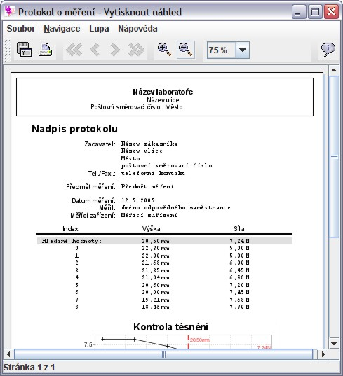

Po ukončení měření je možno vygenerovat protokol o měření pomocí nabídky
Protokol > Vytvořit..., která je dostupná v hlavním
okně aplikace. Výsledný protokol je možno vytisknout na tiskárně, nebo uložit v
různých formátech. Pro zachování zobrazeného vzhledu je protokol potřeba uložit
ve formátu PDF. Pro prohlížení tohoto formátu lze použít například program Adobe
Reader, který je dostupný zdarma na adrese
http://www.adobe.com/.
